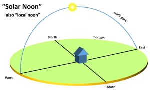
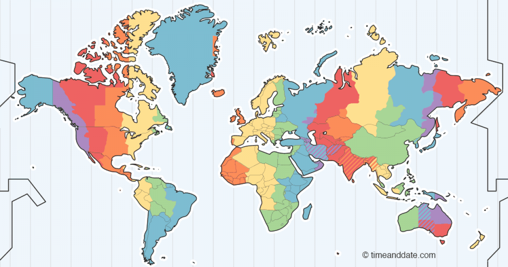

class: center, middle <!-- Link --> [1]: https://www.youtube.com/watch?v=-5wpm-gesOY [2]: https://momentjs.com/docs/#/parsing/ "Parsing" [3]: https://www.w3.org/TR/timezone/ "Working with Timezones" [4]: https://www.w3.org/International/articles/definitions-time/ [5]: https://en.wikipedia.org/wiki/Newfoundland_Time_Zone [6]: https://en.wikipedia.org/wiki/Tz_database [7]: https://www.w3.org/International/wiki/FloatingTime # Time Zones by Harold Vilander ??? - Hello!!! Topic today - another date time topic - timezones and some related things - Computerphile - Youtube - A Warning 1. Some more detailed Vocab 2. Discussion: SQ's solutions - took too long 3. SQForm Date pickers 4. Touch on some tools 5. Moment vs date-fns - Disclaimer.... --- # Disclaimer ### I picked this topic up because I have interest in it. I also tend to be interested in things I find novel or have given me some trouble. ### I always hope to start some discussion, as the best answers to things seem to come from a few sharp minds contributing. ### SO... Please correct me or just discuss this further. I love good discourse. --- class: center # Observed vs. Incremental  <H1 id="EpochTime">1641828909</H1> ??? - Observed Time: also called local time the sun is directly over head - Incremental Time: computationally easier. UTC is an example. - An integer value that increase monotonically from a specific time or Epoch. --- class: center, middle # Field-Based Time Formats Dates and time are divided into fields <img src="./assets/field-based-time.png" alt="Field Based Time" width="800px"/> e.g. ISO-8601 --- class: center, middle <img src="https://imgs.xkcd.com/comics/iso_8601.png" width="550px"/> --- class: center, middle # Zones and Offsets  ??? Map further from GMT Greenwich + or - time - Need once humans started traveling greater distances at quicker speeds Railroads --- # Time Zone 1. Geographic Location 2. UTC Offset aka Time Zone *Offset* 3. DST Observation and Adoption Dates 4. Identifiers: America/New_York ??? TIME ZONE IS NOT GMT+5 - Geographic Location Fun Fact: at the equator traveling 17 miles will change observed local time by 1min. The "one minute" distance is smaller the further you are from the equator - The offset is given in +/- time from UTC - Adoption Japan gave up DST in 1951 - Names of zones: ICANN backs tz database [6] --- # NOTE: - A Timezone offset is not the same all year DST. - Offsets are not always an even hour: [Newfoundland Time Zone][5] is GMT-03:30 during their standard time and GMT-02:30 on DST. --- # Floating Time: - A date or time not dependent on timezone - Examples: Valentines Day, a date of birth, maybe plan effective days - W3C recommends never attaching time offset to a floating time. ??? Each of these V day, dob are based on calendar dates that really have nothing to do with a time zone offset and make less sense when you try to force them into that W3C - this article feels written for those writing the date time libraries, so maybe this is bad advice for us Area of uncertainty for me. --- class: center, middle # Conflict: ## This is where I will defer to others. ??? - I was working with some DOBs for one of the projects I was on, and felt like I was on the right path, but I was directed differently. - In making this presentation, I got even more confused as I started reading things that seeming conflict with what I was told. --- class: center, middle # Time Bandits ### I got super confused and honestly frustrated. Until I bumped into this channel: ### `time-bandits` ### There was a ton of back and forth about the issue that was central to where I was getting confused. --- ## Brett Harrop > Interesting discussion… Here’s my thoughts. > For actual datetimes, we should most definitely send an unambiguous representation of a point in time. It removes ambiguity where the server has to make assumptions. And since (I think) we decided that datetimes should be local to the browser, e.g. if the agent schedules something at 3:00 PM today, it should be 3:00 PM today in their timezone, it’s not that hard to get an unambiguous representation of that. It’d be moment('2020-05-26 15:00', 'YYYY-MM-DD HH:mm');. Or moment('2020-05-26 3:00PM', 'YYYY-MM-DD HH:mmA');. Or even new Date(2020, 4, 26, 15) since we’re doing local time. Or whatever you want. Just get an unambiguous representation of that moment in time. --- ### He continues: > Date-only stuff, e.g. birthdate or the screenshot above with effective date, is a little trickier. There are two solutions in my mind: > Decide on a common midnight to use and use it everywhere. In other words, when we’re in the client, we could do something like moment.tz('2020-05-26', 'YYYY-MM-DD', 'America/Chicago'); to match our application server/database server. Then in the client, we would know that for date-only values, we need to display the value in the central timezone, i.e. moment(datetimeStringFromTheServer).tz('America/Chicago');. > Send a date string and let the server do the work. We could make the data contract for date fields be that the client sends a date string and the server decides how to store it. We would also need to send the date string back from the server so that it’s the same going in and out. --- ### and concludes with: > Date-only stuff is tricky because when you convert a date into a timestamp, you actually have too much information. I’d be interested in hearing others’ thoughts on date-only stuff. I almost feel like sending a date string to the server and expecting a date string back is simpler and makes the client “dumber”. But I could also see that being trickier because we have now defined our own convention of “Send a date string, in this format” which is not a generally accepted standard. Whereas ISO-8601 datetime strings are generally accepted standards. ### The team landed on ... And the team landed on saving everything as a moment in time. For floating times they decided to use midnight CST/CDT. Which aligns with some of the thoughts in this article --- class: center, middle # But why though? https://www.w3.org/International/wiki/FloatingTime ??? A separate W3C article specific to floating time lays out the issue as soon as we put a floating time into a JS Date we are forcing it into incremental time "The problem here is that many of the Date methods in JavaScript are sensitive to the local system's time zone and they try to present the value using local time zone rules." "One way to work around this it to always use UTC (there are methods in JavaScript, for example, that allow one to work strictly in UTC) for floating time values." --- class: center, middle # SQ DatePicker ??? - Floating Date - Date Time CHANGE TIME ZONES - Floating Date - Date Time --- # SQFormDatePicker - is Moment™ ... Moment is deprecated. - `.isUTC()` -> false - `.utcOffset()` -> -300 --- class: center, middle # datefns --- # List time zones ``` const { listTimeZones } = require('timezone-support') const timeZones = listTimeZones() ``` --- # Parse a date from a string in a specific time zone ``` const { parseZonedTime } = require('date-fns-timezone/dist/parseFromTimeZone') const enteredTime = '2018-09-02 12:04:30.982' const timeZone = 'Europe/Berlin' const storedDate = parseFromTimeZone(enteredTime, { timeZone }) // Contains date "2018-09-02T10:04:30.982Z" const enteredTime = '09/02/2018 12:04:30.982 PM' const customFormat = 'MM/DD/YYYY h:mm:ss.SSS A' const timeZone = 'America/New_York' const storedDate = parseFromTimeZone(enteredTime, customFormat, { timeZone }) // Contains date "2018-09-02T18:04:30.982Z" ``` --- # More examples https://github.com/prantlf/date-fns-timezone/blob/master/docs/usage.md#usage-scenarios